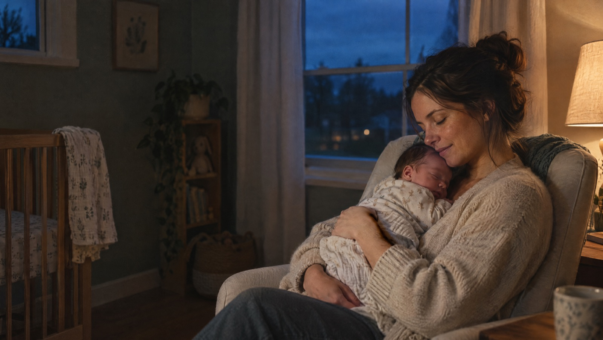
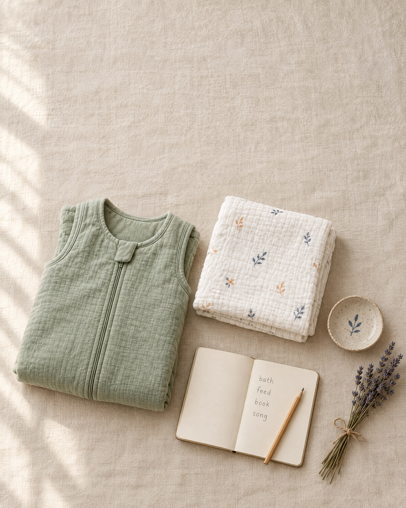

Rhythm
An evening order you can follow half asleep.
The same steps in the same sequence, roughly 20 to 40 minutes each night. The index card on the fridge, done properly, with a “good enough” version for the hard nights.
First 90 Nights is a short, self-paced course for first-time parents. It gives you a simple evening rhythm, a calm plan for night wakings, and a way to share the nights.

“Let's make tonight smaller.”
Not the whole month. Not the next six weeks. Just tonight. One small change at a time.
These are the things parents tell me in our very first call. Almost word for word.
If any of these are yours, you are in the right place. And you are not doing it wrong.
You did the reading. You took the hospital class. Then the baby arrived, and none of it seemed to apply at 3 a.m.
More data, logged at 2 a.m., and somehow more worry.
Fine as a reference. Exhausting when they start to feel like law.
Every answer contradicts the last one. Each hands you more rules.
But tired people don't need more rules. They need fewer decisions.
When every night is improvised, every waking turns into a debate. Feed or wait? Pick up or pat? Whose turn is it? Is this normal? That is exhausting long before you count the hours of sleep.
A schedule is clock times. Newborns don't read clocks.
A rhythm is the order things happen in. Same steps, same sequence, every evening. You can always do the order, even on a terrible day.
Decide in daylight, so you don't have to decide at 3 a.m.
Nothing dramatic. Small things, in order, every night.
Five foundations. Each one takes a few decisions off your plate.
An evening order you can follow half asleep.
The same steps in the same sequence, roughly 20 to 40 minutes each night. The index card on the fridge, done properly, with a “good enough” version for the hard nights.
A sleep space that's ready before you're exhausted.
Safe sleep basics as published by the AAP, plus light, sound, and temperature. Set it up once, in daylight, and check the details with your pediatrician.
A calm way to meet night wakings.
The Pause and Read: a breath, a look at what you're actually seeing, then a response to that instead of to the panic. Not “let them cry.” Look before you leap.
A night plan both of you understand.
Your Night Relay: who covers which stretch, what the handoff looks like, and what the off-duty person gets to do. Sleep, without guilt. A version for single parents, too.
Care for the parent, not just the baby.
Your rest, your nervous system, your expectations. And when to reach out: your pediatrician for your baby, your own doctor for you.
The foundations I teach every family I work with 1:1, in a short course you can watch on your own time.
For years, I've repeated the same foundations in the first two calls with every family. But my 1:1 calendar is booked weeks out, and the families I turn away are often the ones who need the basics most. So I put the basics into a course.
It won't hand you a strict protocol. It will hand you a calm plan, and the confidence to use it.

Start Here + five modules · 5 to 12 minute lessons · about 2.5 hours
How the course works, and how to use it when you only have ten minutes and one free hand.
Rhythm, Room, Response, Relay, and Recovery. Lessons of 5 to 12 minutes, about two and a half hours in total.
Including your Evening Rhythm card and your Night Relay plan, made to live on the fridge.
Submit your questions, and once a quarter I record a video answering them.
Watch it now, rewatch it at 3 a.m., come back to it with your next baby.
No live calls to schedule. No community to keep up with. Just the foundations, when you have a moment.
I'll email you when doors open, and once more before the founding price ends. That's it. No timers, no pressure.
From families I've worked with in my 1:1 practice. Shared with permission.
For the first time in weeks, my husband and I had the same plan at 2 a.m.Priya · mom of a 10-week-old
Lena never made me feel like I'd broken something. She just made the evening make sense.Hannah · mom of a 4-month-old
I stopped googling in the dark. That alone was worth it.Marcus · dad of a 7-week-old
Calm is contagious. Her calm became my calm.Sofia · mom of a 3-month-old
We didn't do anything dramatic. We just did small things, in order, every night.Jen · mom of a 12-week-old
I came back to work feeling like a person again.Aisha · mom of a 5-month-old
I have a PhD in developmental psychology. My dissertation was about infant routines and parental stress. So when my daughter Mina was born in 2015, I had read everything. I could cite the papers.
And at 3 a.m., none of it helped.
Our midwife came for a home visit around week three. She sat on the couch and said, very calmly, “Let's make tonight smaller.” Then I took an index card and wrote our evening on it. Bath or wash, feed, dim lights, one book, one song, down. We taped it to the fridge.
Mina didn't suddenly sleep. But we stopped improvising. We had a rhythm, not a schedule. Years later, after coordinating research in a university infant development lab, I certified as a pediatric sleep consultant in 2019 and opened my 1:1 practice in 2020.
One more thing, because it matters: I'm a doctor of developmental psychology, not a medical doctor. For anything about your baby's health, feeding, breathing, or safe sleep, your pediatrician is your person, and I'll point you there every time.
PhD, Developmental Psychology · Certified Pediatric Sleep Consultant (2019) · Private 1:1 practice since 2020 · Mother of two
You don't need a new set of rules. You need a rhythm, a plan for the wakings, and someone to share the nights with.